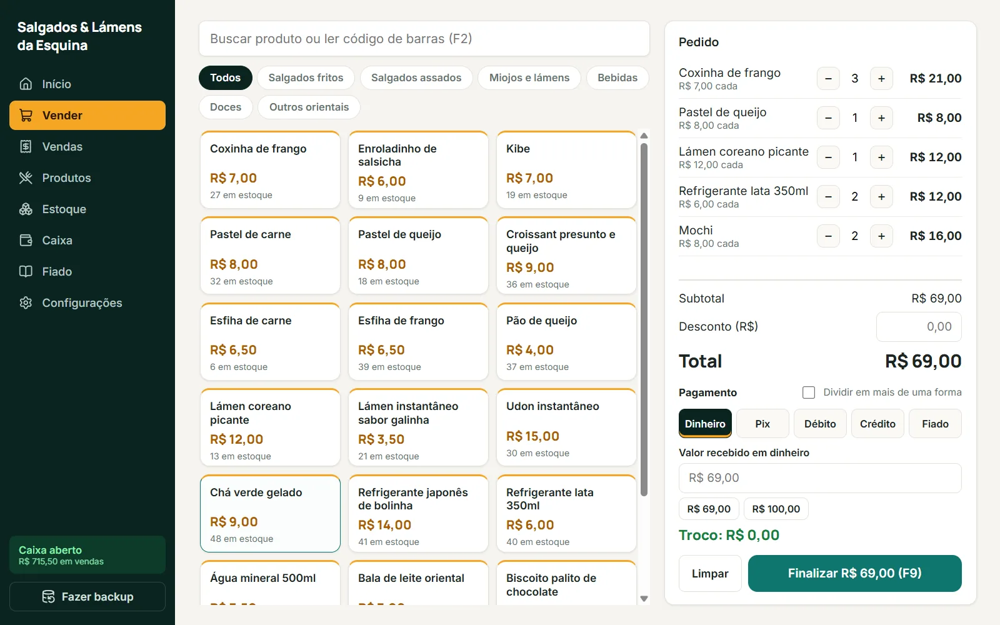
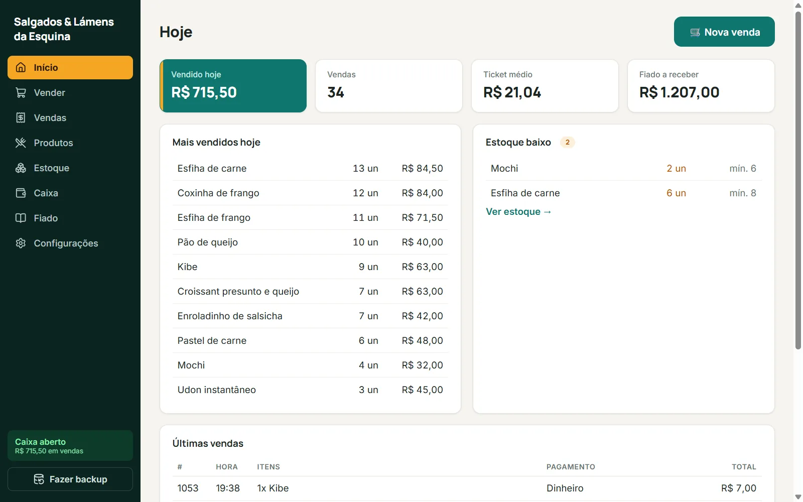
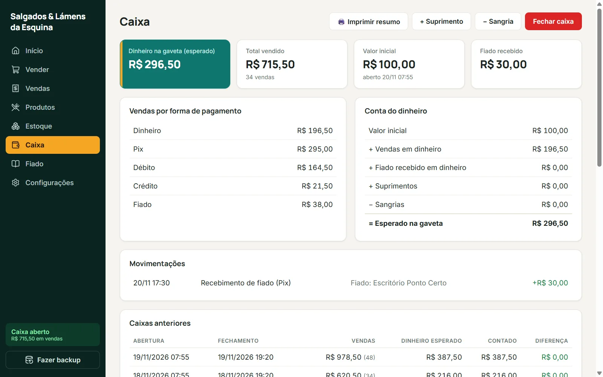
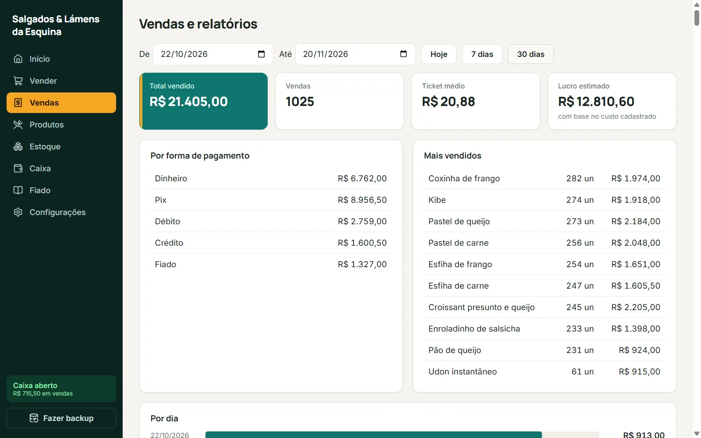
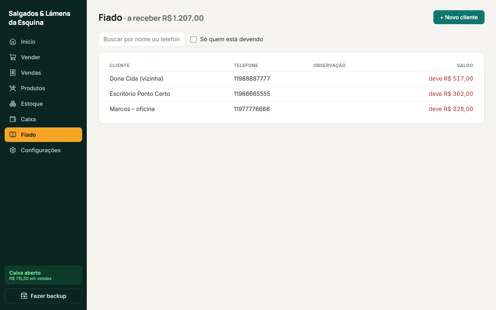

← Todos os projetos
Estudo de caso
PDV Loja de Salgados
Sistema de vendas para uma loja pequena de salgados e produtos orientais, feito para substituir o caderno de pedidos. Funciona sem internet.
- Tipo
- Aplicativo desktop (Windows)
- Meu papel
- Análise, desenvolvimento e testes
- Plataforma
- Computador do balcão
- Banco
- SQLite no próprio computador

O problema
A loja anotava pedidos e vendas num caderno. No fim do dia, ninguém sabia quanto tinha vendido em Pix ou em dinheiro, quanto cada cliente devia no fiado nem o que estava acabando.
A solução
- Telas simples para quem atende no balcão, com atalhos de teclado (F2 para buscar, F9 para finalizar).
- Várias formas de pagamento na mesma venda, inclusive fiado.
- Caixa com abertura, sangria, suprimento e fechamento conferido.
- Estoque com alerta de produto acabando.




Decisões técnicas
- Dinheiro sempre em centavos (número inteiro), no banco e na API, para não ter erro de arredondamento.
- O preço vem do banco, nunca da tela.
- SQLite via WebAssembly (sql.js), gravado em arquivo a cada transação com arquivo temporário e troca de nome, para não corromper se a energia cair.
- Senha do gerente (scrypt) para cancelar venda e fechar o caixa.
- Testes das regras de negócio com banco em memória.
Tecnologias
Electron, React 19, Vite, SQLite (sql.js), lucide-react e electron-builder.